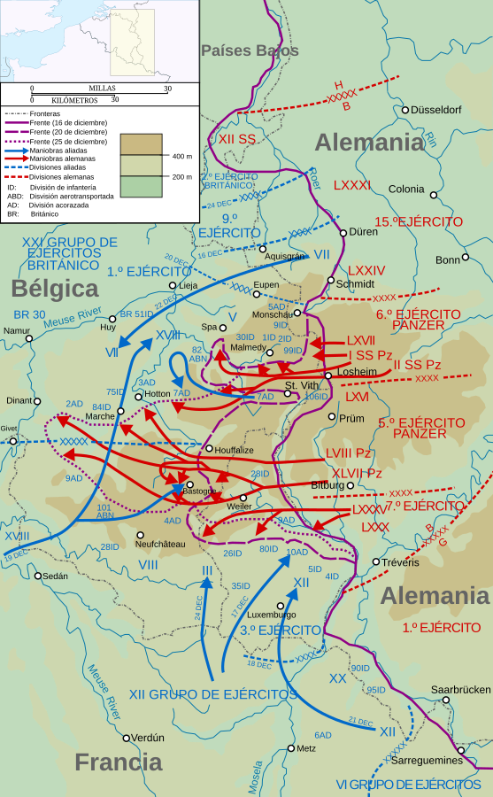

Batalla de las Ardenas
La última gran ofensiva de Alemania en el oeste (Operación Wacht am Rhein), un ataque sorpresa en invierno que creó una gran "bolsa" en el frente aliado, de donde viene su nombre en inglés: la Batalla del Bulto.
Datos
| Fechas | 16 de diciembre de 1944 – 25 de enero de 1945 |
|---|---|
| Lugar | Bosque de las Ardenas (Bélgica y Luxemburgo) |
| Resultado | Victoria aliada; fracaso de la última ofensiva alemana en el oeste |
| Bando atacante | Alemania |
| Defensores | Estados Unidos, con apoyo del Reino Unido |
| Comandantes | Walter Model, Hasso von Manteuffel, Sepp Dietrich (Alemania); Dwight Eisenhower, Omar Bradley, George Patton (Aliados) |
| Clave | El asedio de Bastoña y la resistencia estadounidense en la nieve |
Bandos
Wacht am Rhein
Defensor
Apoyo
Introducción
A finales de 1944, con los aliados en la frontera alemana y el Ejército Rojo avanzando por el este, Hitler jugó su última carta en el oeste: una ofensiva sorpresa a través del bosque de las Ardenas —el mismo terreno de 1940— para dividir a los ejércitos aliados y recuperar el puerto de Amberes. Confiaba en el mal tiempo invernal para anular la aviación aliada.
Razones
- Dividir a los aliados: alcanzar Amberes cortaría en dos a las fuerzas británicas y estadounidenses.
- Forzar una paz negociada: Hitler esperaba que una derrota espectacular quebrara la alianza occidental y le permitiera concentrarse en el este.
- Aprovechar el terreno y el clima: las Ardenas estaban poco defendidas y el mal tiempo mantenía en tierra a los aviones aliados.
Cuerpo (desarrollo)
El ataque sorprendió a un sector débil del frente estadounidense y abrió una profunda "bolsa" (the Bulge). Sin embargo, focos de resistencia frenaron el avance en los cruces de carreteras clave. En Bastoña, la 101.ª División Aerotransportada quedó rodeada; cuando los alemanes exigieron su rendición, el general McAuliffe respondió con una sola palabra: "Nuts!" ("¡Y una porra!").
El avance alemán se quedó sin combustible y perdió impulso. Cuando el cielo despejó, la aviación aliada machacó las columnas alemanas, y el Tercer Ejército de Patton giró al norte para romper el cerco de Bastoña. A finales de enero, el frente había vuelto a su posición inicial.

Mapa estratégico de la ofensiva de las Ardenas en español (Wikimedia Commons): la penetración alemana y la "bolsa" en el frente aliado.
Conclusión
La ofensiva fracasó por completo. Alemania gastó sus últimas reservas de blindados, aviones y hombres en el oeste sin lograr ningún objetivo estratégico.
- Fue la batalla más sangrienta librada por Estados Unidos en la guerra en cuanto a bajas.
- Alemania quedó sin reservas para defender su propio territorio, acelerando su derrota final.
- El desgaste facilitó el avance aliado hacia el Rin y hacia el corazón de Alemania.
Curiosidades
- "Nuts!": la desafiante respuesta de McAuliffe a la exigencia alemana de rendición en Bastoña se hizo legendaria.
- Comandos infiltrados: soldados alemanes con uniformes estadounidenses (Operación Greif, de Otto Skorzeny) sembraron confusión tras las líneas.
- La masacre de Malmedy: el asesinato de prisioneros estadounidenses por tropas de las SS endureció la lucha y tuvo consecuencias judiciales tras la guerra.
Teorías
Debates e interpretaciones historiográficas, presentados como tales:
- ¿Fue un error garrafal de Hitler? Muchos generales alemanes consideraron la ofensiva un despilfarro suicida de las últimas reservas; se debate si tenía alguna posibilidad realista de éxito.
- La sorpresa aliada: se discute cómo la inteligencia aliada, tan eficaz en otros momentos, no anticipó una concentración de fuerzas tan grande.